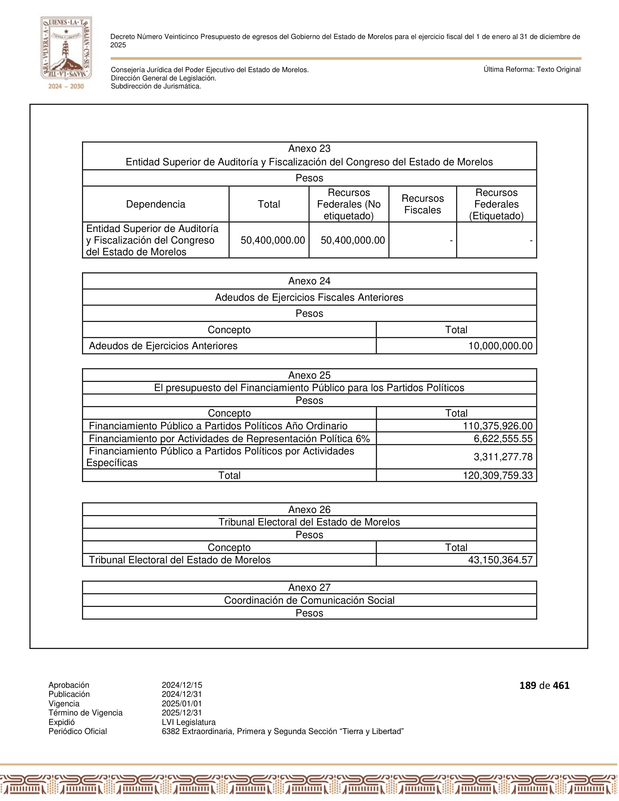
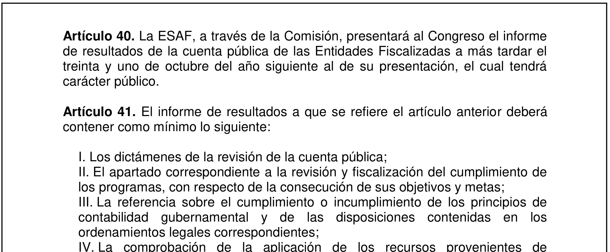
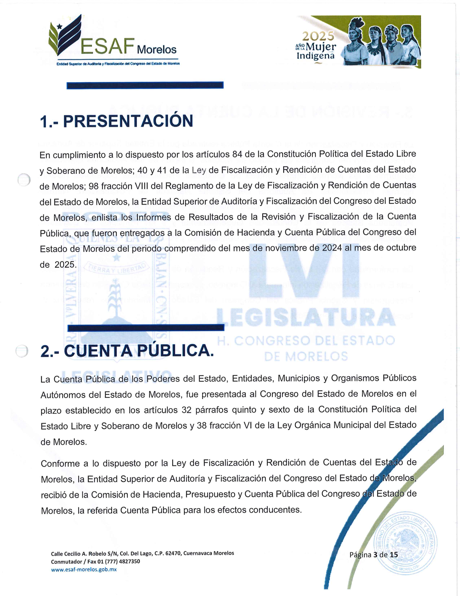
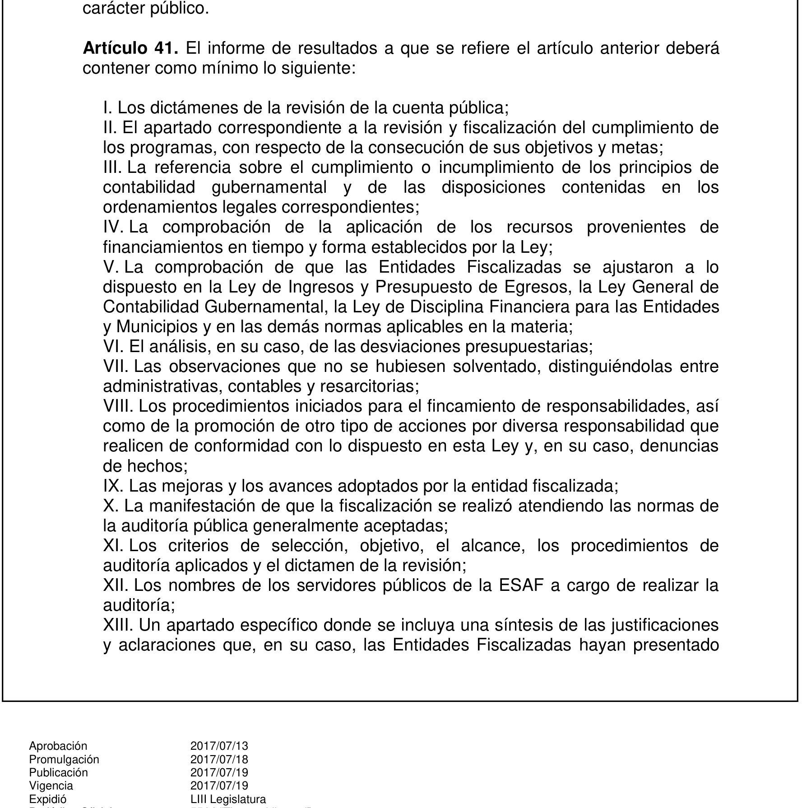
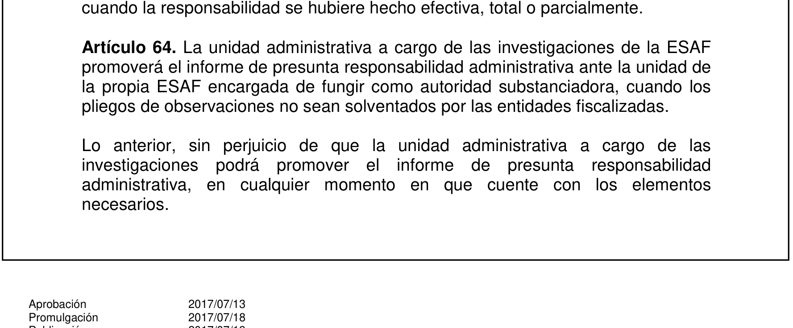
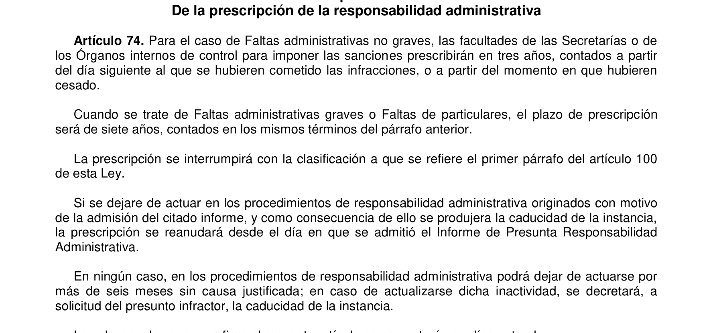
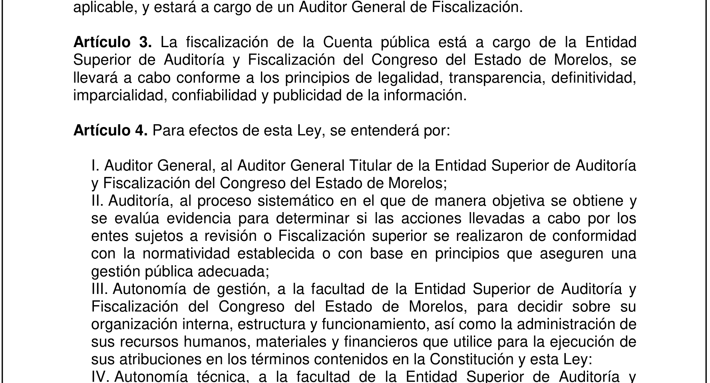
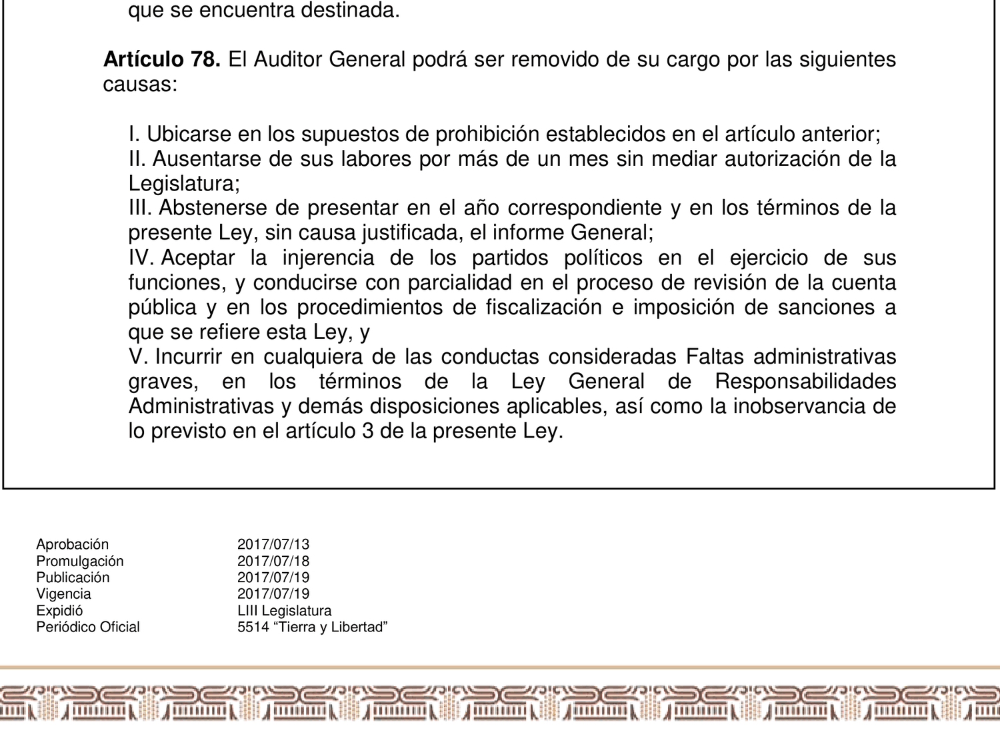

Cincuenta millones y ni una palabra
La Entidad Superior de Auditoría y Fiscalización de Morelos cuesta 50 millones 400 mil pesos al año. En los dos únicos informes que su titular ha rendido al Congreso, con 165 auditorías documentadas, 161 llegaron fuera del plazo legal y las palabras observación, pliego, fincamiento, denuncia y sanción no aparecen ni una sola vez. Con O'Donnell y la rendición de cuentas horizontal: el poder legal sin la voluntad no produce nada, produce un edificio.

Imagina que contratas a alguien para que revise las cuentas de tu negocio. Le pagas bien. Muy bien. Cada año le entregas 50 millones de pesos. Y al terminar el año te da una hoja donde dice a qué hora llegó a trabajar. No te dice qué encontró. No te dice si alguien metió la mano. Solo a qué hora llegó.
Eso, y no es una figura retórica, es lo que hoy entrega la Entidad Superior de Auditoría y Fiscalización del Congreso del Estado de Morelos, que casi nadie conoce por su nombre y que todos pagamos. Le dicen ESAF. Es el órgano que revisa cómo gastan el dinero público los 36 municipios, las secretarías del estado, los sistemas de agua, el DIF, las universidades. Todo. Es el contador de Morelos.
Empecemos por el precio, que está en un documento público y cualquiera puede abrir.
El Presupuesto de Egresos del Gobierno del Estado de Morelos para 2025, en su Anexo 23, le asigna a la ESAF 50 millones 400 mil pesos. Son 138 mil pesos por cada día del año, sábados y domingos incluidos. Puesto junto al Congreso, que costó 612 millones 800 mil, la ESAF es el 7.6 por ciento de lo que gasta el Poder Legislativo, y el Congreso se queda con el otro 92.4 por ciento.

Ahora veamos qué entregó por ese dinero.
Los dos únicos informes que su titular ha rendido al Congreso, el de 2024 y el de 2025, documentan 165 auditorías. De esas 165, exactamente 4 llegaron dentro del plazo que marca la ley. Son el 2.4 por ciento. Las otras 161, el 97.6 por ciento, llegaron tarde.

El plazo no es un capricho nuestro. El artículo 40 de la Ley de Fiscalización y Rendición de Cuentas del Estado de Morelos dice que el informe se entrega a más tardar el 31 de octubre del año siguiente.

Y el retraso conviene verlo en escalera, porque el promedio esconde lo grueso. De las 165 auditorías: 149 llegaron con medio año o más de atraso, el 90.3 por ciento. 67 llegaron con un año o más, el 40.6 por ciento. 11 llegaron con dos años o más, el 6.7 por ciento. 5 con tres años o más, el 3 por ciento. Y una, la peor, llegó con 4 años y 5 meses de retraso. El retraso de en medio, el típico, ronda los 10 meses.
Dicho en corto: de cada 100 auditorías, 98 llegaron tarde y 41 llegaron con más de un año encima.
Y ahí va el dato que a mí me dejó mudo.
Buscamos, palabra por palabra, en esos dos informes. Buscamos "observación". Buscamos "pliego". Buscamos "fincamiento". Buscamos "denuncia". Buscamos "sanción". Buscamos "Fiscalía Anticorrupción".
Cero. Ninguna aparece. Ni una sola vez.
No es que digan pocas. Es que no las dicen. Los informes son listas de nombres de entes con la fecha en que se entregó el papel. Nada más.
Antes de que alguien piense que leímos mal el escaneo, lo verificamos con palabras de control. En esos mismos archivos, "Auditor" aparece 41 y 53 veces. "Congreso", 26 y 39. "Cuenta Pública", 13 en cada uno. El documento se leyó completo. Los ceros son del documento.

Y esto no es una decisión de estilo del funcionario. Es la ley. El artículo 41 de esa misma ley enumera lo que el informe debe contener. Su fracción VII pide "las observaciones que no se hubiesen solventado, distinguiéndolas entre administrativas, contables y resarcitorias". Su fracción VIII, "los procedimientos iniciados para el fincamiento de responsabilidades, así como de la promoción de otro tipo de acciones por diversa responsabilidad que realicen de conformidad con lo dispuesto en esta Ley y, en su caso, denuncias de hechos". Ninguna de las dos está.

Hay más, y aquí los porcentajes hablan solos. En un informe anterior, el propio ESAF reportó 12 revisiones con 183 observaciones, de las cuales 116 quedaron sin resolver. Es el 63.4 por ciento. El sistema de agua de Tlaquiltenango salió con 18 de 18 sin resolver, el 100 por ciento. Miacatlán, 10 de 10, otro 100 por ciento. El fideicomiso agropecuario del estado, 6 de 6, 100 por ciento. Emiliano Zapata, 33 de 34, el 97.1 por ciento.
Y en la misma lista, en el otro extremo, el sistema de agua de Jiutepec: solo 4 de 30 sin resolver, el 13.3 por ciento. De 100 por ciento a 13 por ciento, en el mismo informe, con la misma vara.
Cuando una observación no se resuelve, la ley no deja margen. El artículo 64 dice que la unidad de investigación del ESAF "promoverá el informe de presunta responsabilidad administrativa cuando los pliegos de observaciones no sean solventados". No dice podrá. Dice promoverá. Y del otro lado, en los informes, no hay uno solo.

Aquí conviene poner sobre la mesa lo que juega en contra de esta lectura, porque si no, esto sería un panfleto.
Uno. El ESAF sí ha actuado alguna vez. De acuerdo con lo publicado por medios locales, presentó denuncias penales ante la fiscalía anticorrupción por observaciones no solventadas de administraciones de Cuautla, y en 2022 el propio Congreso removió a la anterior titular del órgano, América López Rodríguez, a quien la Fiscalía imputó por peculado y ejercicio ilícito de atribuciones. Ella ha sostenido públicamente que fue persecución política. La maquinaria sí sabe moverse cuando quiere moverse.
Dos. La ESAF no es un órgano caro. Sus 50 millones son apenas el 0.13 por ciento del gasto total del estado, que en 2025 fue de 38 mil 196 millones de pesos. Eso es cierto y hay que decirlo. Solo que la cifra se puede leer al revés: cobra el 0.13 por ciento para vigilar el otro 99.87 por ciento. Y esa es justamente la razón por la que importa que funcione.
Tres, y esto tira la explicación más cómoda: no se les acabó el tiempo. Una falta administrativa grave prescribe a los 7 años, según el artículo 74 de la Ley General de Responsabilidades Administrativas. Cruzamos las 165 auditorías contra ese reloj. Cuando el ESAF por fin entrega el informe, apenas ha consumido el 26.2 por ciento del plazo. Le queda el 73.8 por ciento por delante, más de 5 años. Y de las 165, han prescrito 0. El 0 por ciento.

No fue falta de tiempo. Ni de dinero. Ni de hallazgos, porque los hallazgos son suyos.
No fue por falta de tiempo. Ni por falta de dinero. Ni por falta de hallazgos, porque los hallazgos son suyos, no nuestros.
Y ahí está lo que a mi juicio importa, y esto ya es lectura mía, no dato.
Viendo los números juntos, a mí se me vino a la cabeza la lucha libre.
En la arena los golpes suenan. A veces conectan de verdad, y hay luchadores lesionados de por vida y quien se ha quedado en el ring. Pero buena parte del oficio consiste en cuidar al rival: hacer que se oiga sin romperlo. Y todos lo sabemos. Nadie compra el boleto pensando otra cosa.
Ahora, aquí hay que decir algo con todas sus letras, porque es justo lo que separa una cosa de la otra. La lucha cumple. Pagas la entrada y recibes la función. Hay oficio, hay años de entrenamiento, hay riesgo de verdad, y hay una caída que el réferi cuenta hasta tres. Sales de la arena con exactamente lo que fuiste a comprar. Por eso es un arte y no un fraude.
La ESAF no entrega ni una cosa ni la otra. No hay resultado, porque la palabra sanción aparece 0 veces en 165 auditorías. Y tampoco hay espectáculo, porque casi nadie en Morelos sabe siquiera que existe. Ni el golpe que se aplica ni la función que se disfruta.
Ni entretenimiento ni justicia. Solo el recibo. Y ese recibo lo pagamos todos, sin haber comprado boleto.
Hay una palabra que vive en los dos mundos y que a mí me parece que lo dice todo. En la lucha, a la llave se le dice castigo, y el castigo se aplica. En el derecho, a la consecuencia se le dice sanción, y aquí no se aplicó ninguna.
Hace unos días publicamos lo de la basura de Cuautla. Un municipio que presupuestó 5.9 millones para toda la limpieza y terminó pagando 13.7, un 132 por ciento más de lo aprobado, sin contrato publicado. Lo encontramos con una factura y una cuenta pública abierta en la pantalla, un fin de semana, sin presupuesto y sin facultades.
Guillermo O'Donnell escribió en 1998 que una democracia no se sostiene solo con elecciones, sino con lo que llamó rendición de cuentas horizontal. Y al definirla puso una condición doble que conviene leer completa: depende, dice, de la existencia de órganos del Estado "legalmente facultados, y de hecho dispuestos y capaces, para emprender acciones que van desde la supervisión rutinaria hasta sanciones penales" frente a los actos u omisiones de otros órganos del Estado.
Facultados, y además dispuestos y capaces. Lo segundo no es un adorno de la frase: es la mitad de la definición. El poder legal sin la voluntad no produce nada. Produce un edificio.
Qué se está incumpliendo, artículo por artículo
Conviene enumerarlo, porque el argumento no depende de ninguna apreciación editorial. Son obligaciones escritas en la ley que rige a la propia Entidad.
El plazo. El artículo 40 de la Ley de Fiscalización y Rendición de Cuentas del Estado de Morelos fija el 31 de octubre del año siguiente como límite para entregar el Informe de Resultados. De 165 auditorías, 161 llegaron después.
El contenido. El artículo 41 enumera lo que ese informe debe contener. Su fracción VII exige, textual, "las observaciones que no se hubiesen solventado, distinguiéndolas entre administrativas, contables y resarcitorias". Su fracción VIII, "los procedimientos iniciados para el fincamiento de responsabilidades, así como de la promoción de otro tipo de acciones por diversa responsabilidad que realicen de conformidad con lo dispuesto en esta Ley y, en su caso, denuncias de hechos". Ninguna de las dos aparece.
La consecuencia automática. El artículo 64 dispone que la unidad a cargo de las investigaciones "promoverá el informe de presunta responsabilidad administrativa cuando los pliegos de observaciones no sean solventados por las entidades fiscalizadas". No dice podrá. Y hubo 116 observaciones sin solventar.
Los principios. El artículo 3 obliga a la Entidad a conducirse conforme a los principios de legalidad, definitividad, imparcialidad, confiabilidad y publicidad. La definitividad implica resolver, no eternizar.

Y las consecuencias personales. El artículo 78 establece las causales de remoción del Auditor General. Su fracción III contempla "abstenerse de presentar en el año correspondiente y en los términos de la presente Ley, sin causa justificada, el informe General". Su fracción V incluye la inobservancia de lo previsto en el artículo 3, el de los principios.

Ninguno de esos artículos es oscuro. Están publicados, son gratuitos, y son la ley que la propia Entidad aplica a los demás.
Yo no voy a decir aquí por qué no actúan. No lo sé y no tengo cómo probarlo, y quien afirma lo que no puede probar termina regalándole al señalado la mejor de sus defensas.
Lo que sí puedo hacer es dejar los dos números juntos y quedarme callado.
Nosotros: una factura, una tarde, cero pesos.
Ellos: 50 millones 400 mil pesos al año, 165 auditorías, el 97.6 por ciento entregadas tarde, el 63.4 por ciento de las observaciones sin resolver, y la palabra sanción escrita 0 veces.
En la arena a eso le dirían una función sin caída. Aquí le dicen fiscalización.
La pregunta no es cuánto cuesta auditar Morelos. La pregunta es qué función estamos pagando.
Documentos que respaldan cada cifra
Las nueve capturas que acompañan esta columna no son ilustración: son las páginas de donde salió cada cifra. Tres vienen de documentos oficiales de la Entidad Superior de Auditoría y del Presupuesto de Egresos del estado, y seis son los artículos de ley que se citan, reproducidos del texto vigente. Cualquier lector puede rehacer el ejercicio completo con los mismos documentos, que son públicos y gratuitos.
SRVO
Fuentes y referencias citadas
- Presupuesto de Egresos del Gobierno del Estado de Morelos para el ejercicio fiscal 2025, Decreto Número Veinticinco. Anexos 1 y 23 para las asignaciones del Poder Legislativo y de la ESAF; artículo Décimo Sexto para el gasto neto total. Publicado en el Periódico Oficial "Tierra y Libertad" 6382 Extraordinaria, 31 de diciembre de 2024.
- Ley de Fiscalización y Rendición de Cuentas del Estado de Morelos, artículos 40, 41 y 64. Última reforma 4 de septiembre de 2024.
- Ley General de Responsabilidades Administrativas, artículo 74.
- Reporte de Informes de Resultados 2024, oficio ESAF/561/2024 del 30 de octubre de 2024, y Reporte de Informes de Resultados 2025, oficio ESAF/853/2025 del 28 de octubre de 2025, Entidad Superior de Auditoría y Fiscalización del Congreso del Estado de Morelos. El portal esaf-morelos.gob.mx devolvió error 503 al momento de la consulta; los documentos están resguardados y se publican junto con esta columna.
- Informe Final del ejercicio fiscal 2023, sección 7, Entidad Superior de Auditoría y Fiscalización del Congreso del Estado de Morelos.
- O'Donnell, Guillermo, "Horizontal Accountability in New Democracies", Journal of Democracy, vol. 9, núm. 3, julio de 1998, pp. 112-126. La definición citada está en la p. 117. cotejado contra el texto original.